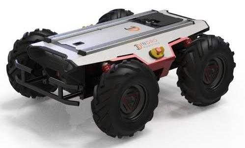
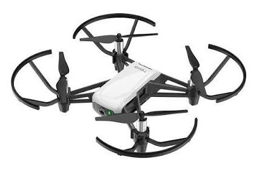
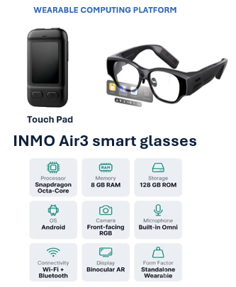
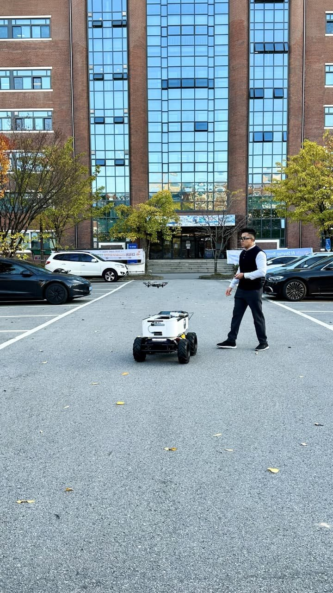
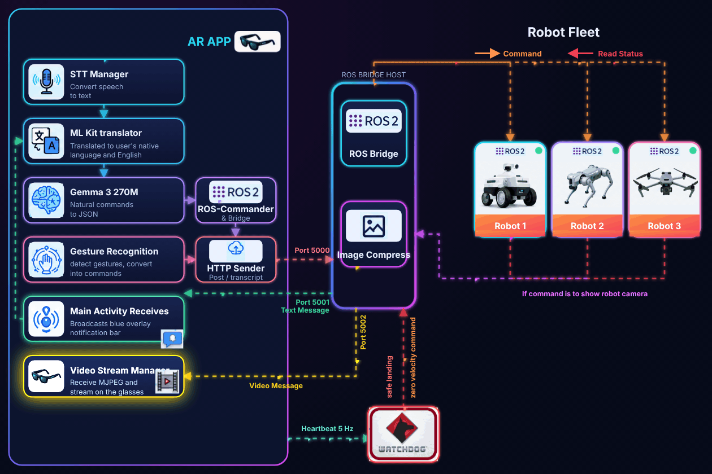
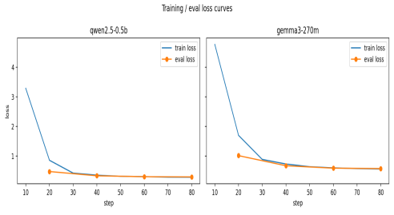
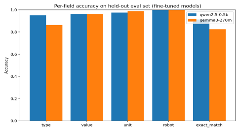

Abstract
Eyes on Robots is a stand-alone, voice- and gesture-driven interface for monitoring and commanding a fleet of ROS 2 robots from AR smart glasses. Its language understanding runs on the glasses themselves, so the core interaction is designed to work without a cloud connection.
A fine-tuned Gemma 3 model (270 M parameters, quantised to INT8) runs on INMO Air3 glasses and turns a spoken command into a structured JSON command for a chosen robot. Speech is converted to text and translated offline with Google ML Kit, so operators can speak in their own language. A PD controller with odometry feedback runs on the glasses and drives bounded distance and rotation moves. An emergency stop and a heartbeat watchdog protect the fleet.
The system was validated on hardware with a Scout 2.0 ground robot and a DJI Tello drone.
- On-device model
- 270 Mparameters, Gemma 3, INT8
- Command to robot start
- 3.7 sQwen2.5-0.5B: 7.6 s
- PD motion accuracy
- 97% / 93%linear / angular
- Fleet size
- up to 20ROS 2 robots monitored
What is new
A language model on the glasses
The first implementation of an offline, on-device language model on stand-alone AR smart glasses for controlling a multi-robot system.
Fleet-level control
One interface monitors up to 20 ROS 2 robots. Each command names the robot it is for, for example a ground robot or a drone.
Speak your own language
A wake word (“Hey Vero”) starts listening, offline translation handles non-English speech, and hand gestures and manual controls are available too.
Safe by design
An emergency button and a 5 Hz connection watchdog stop the robots, and land the drones if the link is not restored within 3 seconds.
How it differs from earlier approaches
| Approach | Examples | Key limitation |
|---|---|---|
| Handheld and screen-based teleoperation | Joysticks, wearable sensors, ground-station apps | Occupies the operator's hands; typically controls one robot at a time. |
| Language and vision–language models | SayCan (2022), RT-2 (2023), VLA surveys | Large models often depend on cloud services or dedicated GPU hardware. |
| VR/AR interfaces for robots | Rücker (2020), Dierks (2020), Xu et al. (2025) | Mostly single-robot and focused on vision or gestures; not a stand-alone device with on-device language understanding. |
| Our earlier work | Eyes on the Robot (IICC 2026) | Cloud-based Claude through a Flask server; limited to one robot. |
The gap. No known system combines lightweight, stand-alone AR glasses with on-device language understanding for fleet-level robot control.
Experiments
The system was tested on real robots. Click a video to pause or play it.
A drone and a ground robot, commanded from the glasses
The drone flies above the ground robot and the two move forward together. The video is sped up.
The operator’s view
The operator wears the glasses and gives voice commands. The robots receive them over ROS Bridge, so there is no controller to hold and the operator's hands stay free.




Hardware experiment and app configuration
The glasses connect to each robot through its ROS Bridge address, and the CAIM SG app then sends the commands to the selected robot.
System architecture
The AR app on the glasses handles speech, translation, language understanding and gestures. A ROS Bridge host connects the glasses to every robot in the fleet, relays commands and status, and compresses the camera images the robots send back.

STT and ML translator layers
Receive the voice command, convert it to text, and translate it into English if it is not English.
AI layer (Gemma 3)
Processes the natural command and converts it into JSON for the requested robot and action.
ROS 2 commander layer
Defines a structured format for robot commands, storing command type, value, unit and robot ID, so instructions are processed and executed consistently.
ROS 2 bridge
Runs on the robots in the fleet and connects the glasses to the matching robot over a WebSocket connection.
From voice to a structured robot command
“Hey Vero, could you rotate the ground robot 30 degrees to the left?”
Wake word
“Vero” or “Hey Vero” activates listening.
Speech to text
Recognises the utterance.
Language
Translates to English if the input is not English.
Gemma 3
Classifies the intent and extracts the robot and the value.
JSON
Generates a structured command object.
RosCommand
Parses the fields into a RosCommand object.
Gemma output
{
"type": "rotate_left",
"robot": 1,
"value": 30,
"unit": "degrees"
}RosCommand parsing
type → ROTATE_LEFT
robot → 1 (target robot)
value → 30.0
unit → degrees
RosCommand(type, value,
unit, robot)Command types
Motion: move_forward, move_backward, move_distance, rotate_left, rotate_right, rotate_angle, stop
Interface: show_status, camera_on, camera_off, manual_activate, manual_deactivate, set_speed
Training the on-device model
Two small models were fine-tuned on the same dataset, using the same prompt and examples: Qwen2.5-0.5B and Gemma 3 270M. Both were quantised to INT8 for deployment and evaluated on the same system. The prompt tells the model: “You are a robot command classifier. Output one JSON object.”
Dataset
Fixed prompt plus command examples.
Fine-tune
Qwen2.5-0.5B and Gemma 3 270M.
JSON output
Structured robot command fields.
RosCommand
Parse the fields and build the ROS 2 command.
Natural language to JSON
“Move forward 2 meters” for Robot 1
{"type":"move_forward","robot":1,
"value":2,"unit":"meters"}“Turn left 90 degrees” for Robot 2
{"type":"rotate_left","robot":2,
"value":90,"unit":"degrees"}Model comparison
Held-out evaluation accuracy (reported)
Command issued to robot start (bar scale 0–8 s)
Selection. Gemma 3 270M was chosen because its accuracy is comparable to Qwen2.5-0.5B (91.34% against 92.67%) while the robot starts moving in about half the time.
Training and evaluation evidence


Closed-loop motion control on the glasses
The glasses run the motion controller themselves. After the command is parsed, a bounded PD controller moves the selected robot a set distance or turns it by a set angle, using the robot's odometry as feedback.
RosBridgeClient
Receives the RosCommand and selects the robot ID.
PD controller
Bounded distance or angle control on the glasses.
ROS topics
Publishes a Twist message to the robot's configured topic.
WebSocket
Connects to ws://<robot-IP>:9090 using the ROSBridge protocol.
Robot ROSBridge
Receives the message and forwards it into ROS 2.
The control loop
- Referencetarget distance or heading r(t)
- Errore(t) = r(t) − y(t)
- PD control and saturationu(t) = Kp·e(t), clipped to ±vmax and ±ωmax
- cmd_vellinear and angular velocity command
- Robot basemoves the robot
- Odometry /odommeasured pose and velocity, fed back as y(t)
Nominal loop rate: 12.5 Hz. The motion stops at the target tolerance or when a timeout occurs.
Measured PD controller accuracy, Scout 2.0 (robot ID 1)
System safety
Two independent safeguards protect the connected fleet.
Emergency button
A manual emergency stop is always available to the operator. When pressed, it sends zero-velocity commands to all connected robots.
Connection watchdog
The glasses send a heartbeat to the ROS 2 bridge at 5 Hz, once every 0.2 s. The watchdog monitors the link continuously.
- Connection lost. The watchdog detects a missing heartbeat from the glasses.
- Stop all robots. It immediately sends zero velocity to every connected robot.
- Land drones. If the connection is not restored within 3 seconds, it sends LAND to the drones in the fleet.
Safety principle: stop ground robots immediately; start landing the drones if the link stays unavailable.
Limitations and future work
Limitations
- Wi-Fi only. The system currently connects over Wi-Fi, which is not suitable for long distances.
- One robot at a time. A command cannot yet be assigned to two or more robots at the same time; commands have to be given one by one.
Future work
Point and go. The operator will point a finger at any target point on the robot's live camera view and say “Hey Vero, move the robot there.”